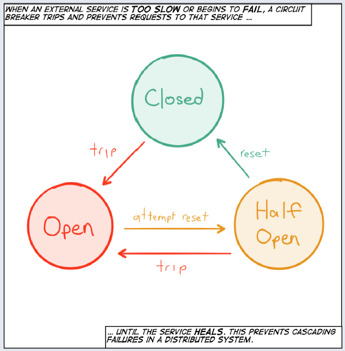

Circumvent subsequent requests when the system is not healthy
Microservices Patterns
Jakub Marchwicki
Pattern #1: Circuit breaker
Intent
Detect excess usage, fail first, and open the circuit. More abstractly, the circuit breaker exists to allow one subsystem (an electrical circuit) to fail (excessive current draw, possibly from a short-circuit) without destroying the entire system (the house).
Release It
— Michael Nygard
— Michael Nygard
Problem
To contain and manage failure without having it cascade throughout the services participating in the workflow:
never be sure how the other system will behave when the communication diverge from the “happy path”
never trust that the other service will behave according to the established protocol
minimize the risk of having one system overloading another during unexpected load increase
avoiding cascading failures requires services that are fully decoupled and isolated
Discussion
Bulkheading has been used in the ship construction for centuries as a way to “create watertight compartments that can contain water in the case of a hull breach or other leak.” The ship is divided into distinct and completely isolated watertight compartments, so that if compartments are filled up with water, the leak does not spread and the ship can continue to function and reach its destination.

Resilience - the ability to heal from failure - depends on compartmentalization and containment of failure, and can only be achieved by breaking free from the strong coupling of synchronous communication.
Reactive Microservices Architecture
— Jonas Boner
— Jonas Boner
- Timeouts
Easiest way to accomodate a failure of upstream service
How long can I wait?
Important on all out-of-process calls + default timeout for everything
Log timeouts, analyze and change them accordingly
- Circuit breakers
Capture failures
Retry tasks and
If the failure persists, quarantine the service for a specific period of time while waiting for the service to recover

Structure
setup_timer()
try(client.call()) {
if (unsuccessful) {
adjust_counters()
}
}Example
- Tools
- Flavours
AOP approach (Hystrix)
Callable approach (Failsafe)
Implementation
public Object run() throws Exception {
long start = System.currentTimeMillis();
try {
if (errorCounter >= maxNbrOfFailures)
return null;
return ic.proceed();
} catch (Exception ex) {
errorCounter++;
throw ex;
} finally {
long duration = System.currentTimeMillis() - start;
if (duration >= timeout)
errorCounter++;
}
}Rules of thumb - timeouts
- Apply to Integration Points, Blocked Threads, and Slow Responses
The Timeouts pattern prevents calls to Integration Points from becoming Blocked Threads. Thus, they avert Cascading Failures.
- Apply to recover from unexpected failures
When an operation is taking too long, sometimes we don’t care why…we just need to give up and keep moving. The Timeouts pattern lets us do that.
- Consider delayed retries
Most of the explanations for a timeout involve problems in the network or the remote system that won’t be resolved right away. Immediate retries are liable to hit the same problem and result in another timeout. That just makes the user wait even longer for his error message. Most of the time, you should queue the operation and retry it later.
Rules of thumb - circuit breaking
- Don’t do it if it hurts
Circuit Breaker is the fundamental pattern for protecting your system from all manner of Integration Points problems. When there’s a difficulty with Integration Points, stop calling it!
- Use together with Timeouts
Circuit Breaker is good at avoiding calls when Integration Points has a problem. The Timeouts pattern indicates that there is a problem in Integration Points.
- Expose, track, and report state changes
Popping a Circuit Breaker always indicates there is a serious problem. It should be visible to operations. It should be reported, recorded, trended, and correlated.
Failsafe
Description
Executable logic can be passed through Failsafe as simple lambda expressions or method references. In Hystrix, your executable logic needs to be placed in a HystrixCommand implementation.
Asynchronous executions in failsafe are performed on a user supplied ThreadPool / Scheduler. In Hystrix, asynchronous commands are executed on internally managed thread pools for particular dependencies.
Failsafe supports retries in addition to circuit breakers
Dependency
<dependency>
<groupId>net.jodah</groupId>
<artifactId>failsafe</artifactId>
<version>0.9.5</version>
</dependency>Timeouts / retries
RetryPolicy retryPolicy = new RetryPolicy()
.retryOn(ConnectException.class)
.withDelay(1, TimeUnit.SECONDS)
.withMaxRetries(3);// Run with retries
Failsafe.with(retryPolicy).run(() -> connect());
// Run synchronously
Failsafe.with(retryPolicy).run(this::connect);
// Get with retries
Connection connection = Failsafe.with(retryPolicy).get(() -> connect());Retry policies
For particular failures:
RetryPolicy retryPolicy = new RetryPolicy()
.retryOn(ConnectException.class, SocketException.class);
.retryOn(failure -> failure instanceof ConnectException);For particular results or conditions:
retryPolicy
.retryWhen(null);
.retryIf(result -> result == null);Simple delay
retryPolicy.withDelay(1, TimeUnit.SECONDS);Back off
retryPolicy.withBackoff(1, 30, TimeUnit.SECONDS);Max number of retries and a max retry duration
retryPolicy
.withMaxRetries(100)
.withMaxDuration(5, TimeUnit.MINUTES);Circuit breaking
CircuitBreaker breaker = new CircuitBreaker()
.withFailureThreshold(3, 10) (1)
.withSuccessThreshold(5) (2)
.withDelay(1, TimeUnit.MINUTES); (3)| 1 | Open circuit when 3 out of 10 failed |
| 2 | Close again if a number of trial executions succeed |
| 3 | Try closing again after delay |
Failing conditions
breaker.
.failWhen(true)
.failOn(NoRouteToHostException.class)
.failIf((result, failure) -> result == 500 || failure instanceof NoRouteToHostException);Fallbacks
Failsafe.with(retryPolicy)
.withFallback(this::connectToBackup)
.get(this::connectToPrimary);Notifications
Failsafe.with(retryPolicy)
.onComplete((cxn, failure) -> {
if (cxn != null)
log.info("Connected to {}", cxn);
else if (failure != null)
log.error("Failed to create connection", e);
})
.onSuccess(cxn -> log.info("Connected to {}", cxn))
.onFailure(failure -> log.error("Failed to create connection", e))
.onFailedAttempt(failure -> log.error("Connection attempt failed", failure))
.onRetry((c, f, ctx) -> log.warn("Failure #{}. Retrying.", ctx.getExecutions()))
.get(this::connect);Pattern #2: Consumer driven contracts
Intent
Consumer Driven Contracts drives the development of the Provider from its Consumers point of view, which means consumer describes what and how it wants to receive the information (in a form of a contract) and then provider implements the service following the given contract. It allows testing interactions between service providers and consumers in isolation against a contract.
- As producers
We are trying to ensure that when we deploy a new service to production, our changes won’t break consumers.
- As consumers
We want to know early (design-time, not runtime) that producer is changing.
Problem
In-process calls (methods, services,
@LocalEJBs) are replaced with out-of-process calls (HTTP, AMPQ)In microservices environments, different services are no longer wired together under the same runtime. Changes in the exposed interfaces for these services can no longer be caught by the compiler.
Without the necessary precautions, there are a lot of ways these interactions can be broken by changes made in the different services
(…) gives you the certainty that the stubs that you’re using were created by the service that you’re calling. Also if you can use them it means that they were tested against the producer’s side. In other words - you can trust those stubs.
Discussion

Figure 1. With integration like this what can possibly go wrong
Change of the endpoint URL (e.g. GET
/stockLevelsrenamed to GET/stockLevel)Change in the expected parameters (e.g. GET
/stockLevelsexpecting a new mandatorycategoryfield)Change in the response payload (returns an
array, instead of having anarraywrapped in anobject)
Structure
The consumer defines what it expects from a specific request to a service
In a way accepted both for consumer and producer
The provider and the consumer agree on this contract
Provider needs to know about the tests, validate them
Consumers and provider might have to agree on some form of common state (if the provider is not stateless or depends on other services)
The provider continuously verifies that the contract is fulfilled


Example
Pattern #3: Application security
Nomenklatura
- Service Provider (Resource Server)
Serwer udostępniający zasoby
- Client
Użytkownik korzystający z Service Provider
- Identity Provider (Authorization Server)
Przechowuje torżsamość użytkownika (klienta)

Problemy z SAML
XML SAML:Assertions
Zorientowane na typowe strony WWW (formulerz, przekierowanie)
Bindings: HTTP Redirect i HTTP POST
Longer messages (e.g., those containing signed SAML assertions) should be transmitted via other bindings such as the HTTP POST Binding.
HTTP POST jest problemowe (lub niemożliwe do implementacji) w przypadku aplikacji mobilnych

OAuth2
Całość komunikacji opiera się na HTTP Redirect
Token przekazywany jest jako parametr (query param)
Nie ma jakichkolwiek założeń co do natury klienta (strona www)
Służy tylko do uwierzytelnienia (authentication)
JWT
Self-contained - zawierają wszystkie potrzebne informacje
Działają pomiędzy różnymi środowiskami (językami programowania)
Łatwe do przesyłania jako element URL lub nagłówek

JWT (2)
header (base64)
{ "typ": "JWT", "alg": "HS256" }payload (JWT Claims: registered, public and private)
{ "iss": "scotch.io", (1) "exp": 1300819380, "name": "Jakub", "admin": true (2) }
JWT (3)
signature
var encodedString = base64UrlEncode(header)
+ "."
+ base64UrlEncode(payload);
HMACSHA256(encodedString, 'secret');Bezpieczeństwo i CSRF
Double Submit Cookies Method
Token przechowywany jest po stronie client i narażony jest na wykradnięcie
LocalStorage może być odczytany przez XSS
Cookie może być wykorzystane w CSRF (impersonalizacja)
Z punktu widzenia serwera musimy się upewnić że token pochodzi od właściciela
Przechowujemy JWT w ciastku
HttpOnlyi przesyłamy tylko przez HTTPSWeryfikujemy
originorazreferrer- ponieważ ataki z reguły z innej domenyPoza standardowych ciastkiem przechowujemy dodatkowe ciastko JS (
X-XSRF-TOKEN) będące np. tylko sygnaturą JWT
Klient przesyła oba elementy i weryfikujemy czy są poprawne (tzw. czy pochodzą z tego samego miejsca oraz czy payload nie został zmodyfikowany)